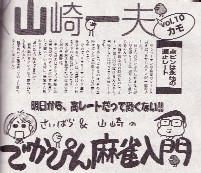
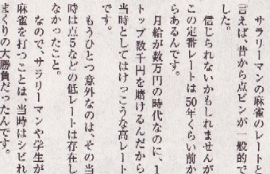

近代麻雀の今月号（10・15日号）
中に「でかぴん麻雀入門（西原理恵子＆山崎一夫）」というページがある。そのページの今月号のタイトルが「点ピンは永遠の適正レート」。

点５でドキドキハラハラするσ(-_-)には とても点ピンが適正レートとは思えないが(^-^；、とりあえず読み始めた。すると冒頭に こんなことが書いてあった。

サラリーマンの麻雀レートは昔から点ピンが一般的って、この“昔”って いつころの話なんだろ....いまから50年前といえば、1960年（昭和36年）くらい。当時は大卒の初任給が２，３万円くらいの頃（と思うんだが....）。まさか月給 数万円のサラリーマンの間で、点ピンが一般的だったとは思えない。それと「当時は点５などの低レートは存在しなかった」という話にも、ちと首をかしげた。
σ(-_-)が本格的に麻雀をやりだしたのは1964年（昭和40年）くらい。そのころフリーモードの雀荘（馴染み客が自然にフリー客状態になって、４人揃ったら打ち始める雀荘）などでは、点３が主流だった（という記憶）。ちょっとレートが高い店でも点５だった。
σ(-_-)も昭和44年くらいになると、何度か点ピンで打った。しかしそれは恰好つけたときだけ。σ(-_-)がピンでもよく打つようになったのは、社会に出て10年ほど経って（昭和50年代） 多少 金回りがよくなってから。とはいえ点５を打たなくなったわけではない。云うなら点５と点ピンは半々くらい。同世代のプレーヤーは、いずれも似たような状況だったのではないか。
そこで点ピンというレートがたとえ50年くらい前からあったとしても、サラリーマン一般的レートとしての選択肢の一つになったのは ずっと後の時代になってから。また点５は、そのころでも ピンより一般的にプレーされていたと思うしだい。
もちろん人によって麻雀環境は異なる。またσ(-_-)のような友達麻雀ではなく、鉄火場的な場所では点５などという低レートは存在しなかったかも知れない。だとしても、「その当時（1960年（昭和36年）は点５などの低レートは存在しなかった」というのは言い過ぎのような....
|